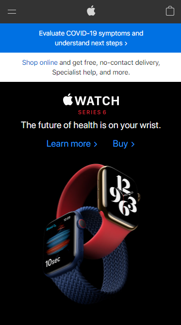
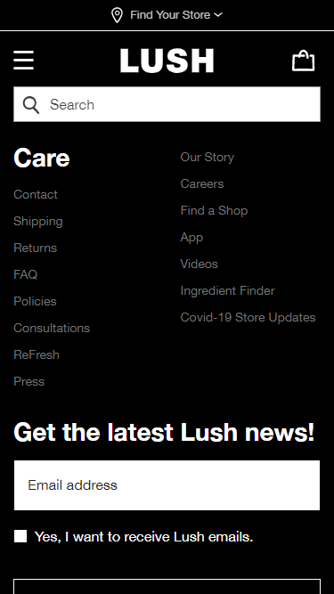

Design Principles
PARC: Alignment
Alignment is seen in Apple's website through the text and images. They put all of this in a center alignment.
PARC: Repetition
The BYUI website uses repetition by repeating the use of the same blue and black color all throughout the website.
PARC: Contrast
Lush uses strong contrast through the black and white colors. Contrast is also seen in using large bold text next to small and light text.